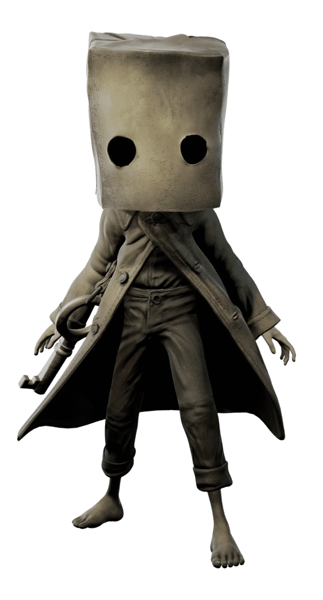
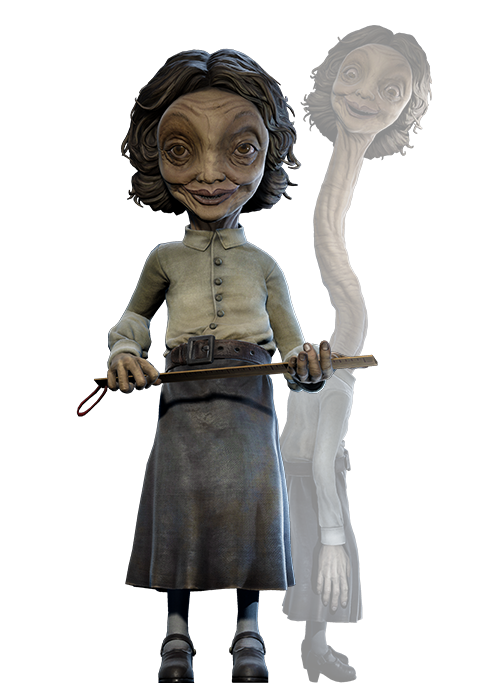
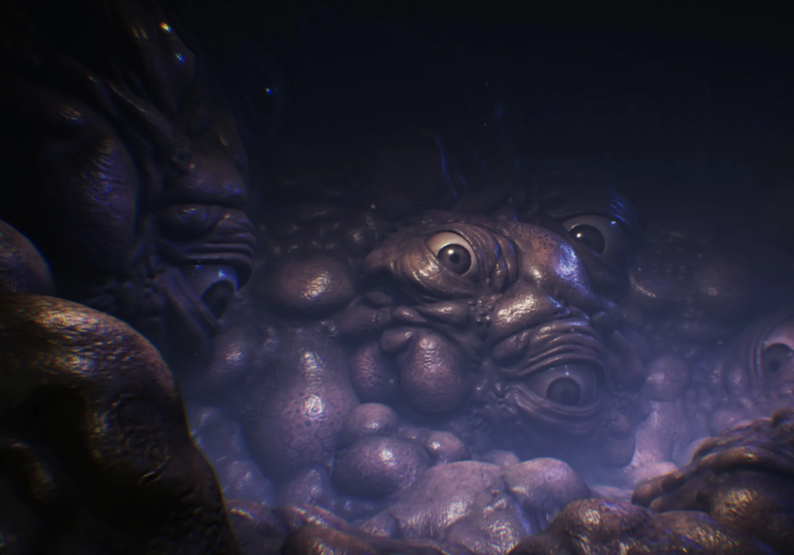

O protagonista que usa um saco de papel na cabeça, capaz de manipular sinais de TV e determinado a salvar Six.

A garota da capa de chuva amarela (encontrada no início do jogo) que se torna companheira de aventura de Mono na Cidade Pálida.

O primeiro grande vilão, vive na floresta isolada, usa um saco de pano na cabeça e caça suas vítimas com uma espingarda e armadilhas.

A aterrorizante comandante da escola, com a capacidade assustadora de esticar seu pescoço para encontrar qualquer um tentando se esconder.

Crianças feitas de porcelana agressivas e barulhentas que dominam e aterrorizam os corredores da escola.

O médico grotesco do hospital que anda pelo teto cuidando de seus pacientes feitos de próteses e manequins.

Corpos reanimados de manequins e próteses no hospital que ganham vida na escuridão, mas congelam quando atingidos por luz direta.

Mãos autônomas e agressivas que se movem rapidamente pelo hospital atacando como aranhas.

A misteriosa e imponente figura de terno que controla os sinais de TV, persegue os protagonistas e representa a essência da Torre de Sina

Os habitantes hipnotizados e deformados da Cidade Pálida, viciados nas transmissões das televisões.

A versão distorcida e agigantada de Six, transformada pela influência da Torre de Sinal.
